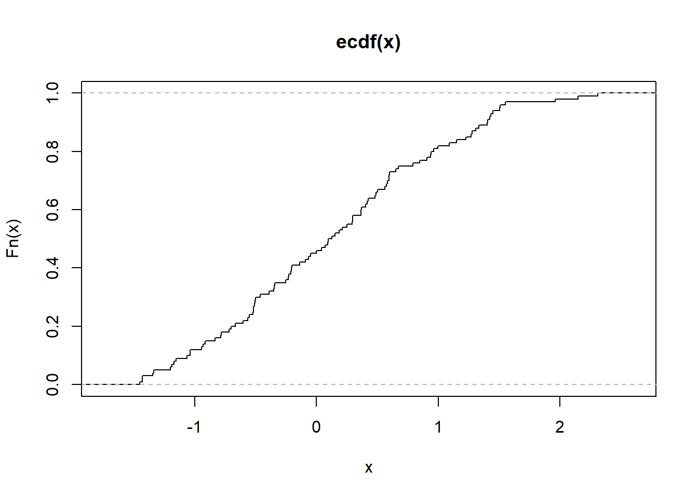

3.3 Normality Assessment
Since Normal (Gaussian) distribution has many applications, we typically want/ wish our data or our variable is normal. Hence, we have to assess the normality based on not only Numerical Measures but also Graphical Measures
3.3.1 Graphical Assessment
pacman::p_load("car")
qqnorm(precip, ylab = "Precipitation [in/yr] for 70 US cities")
qqline(precip) The straight line represents the theoretical line for normally distributed data. The dots represent real empirical data that we are checking.
If all the dots fall on the straight line, we can be confident that our data follow a normal distribution. If our data wiggle and deviate from the line, we should be concerned with the normality assumption.
The straight line represents the theoretical line for normally distributed data. The dots represent real empirical data that we are checking.
If all the dots fall on the straight line, we can be confident that our data follow a normal distribution. If our data wiggle and deviate from the line, we should be concerned with the normality assumption.
3.3.2 Summary Statistics
Sometimes it’s hard to tell whether your data follow the normal distribution by just looking at the graph. Hence, we often have to conduct statistical test to aid our decision. Common tests are
- Methods based on normal probability plot
- Methods based on empirical cumulative distribution function
3.3.2.1 Methods based on normal probability plot
3.3.2.1.1 Correlation Coefficient with Normal Probability Plots
(Looney and Gulledge 1985) (Shapiro and Francia 1972) The correlation coefficient between \(y_{(i)}\) and \(m_i^*\) as given on the normal probability plot:
\[W^*=\frac{\sum_{i=1}^{n}(y_{(i)}-\bar{y})(m_i^*-0)}{(\sum_{i=1}^{n}(y_{(i)}-\bar{y})^2\sum_{i=1}^{n}(m_i^*-0)^2)^.5}\]
where \(\bar{m^*}=0\)
Pearson product moment formula for correlation:
\[\hat{p}=\frac{\sum_{i-1}^{n}(y_i-\bar{y})(x_i-\bar{x})}{(\sum_{i=1}^{n}(y_{i}-\bar{y})^2\sum_{i=1}^{n}(x_i-\bar{x})^2)^.5}\]
- When the correlation is 1, the plot is exactly linear and normality is assumed.
- The closer the correlation is to zero, the more confident we are to reject normality
- Inference on W* needs to be based on special tables (Looney and Gulledge 1985)
## [1] 0.22967133.3.2.1.2 Shapiro-Wilk Test
(Shapiro and Wilk 1965)
\[W=(\frac{\sum_{i=1}^{n}a_i(y_{(i)}-\bar{y})(m_i^*-0)}{(\sum_{i=1}^{n}a_i^2(y_{(i)}-\bar{y})^2\sum_{i=1}^{n}(m_i^*-0)^2)^.5})^2\]
where \(a_1,..,a_n\) are weights computed from the covariance matrix for the order statistics.
- Researchers typically use this test to assess normality. (n < 2000) Under normality, W is close to 1, just like \(W^*\). Notice that the only difference between W and W* is the “weights”.
## [1] 0.17913763.3.2.2 Methods based on empirical cumulative distribution function
The formula for the empirical cumulative distribution function (CDF) is:
\(F_n(t)\) = estimate of probability that an observation \(\le\) t = (number of observation \(\le\) t)/n
This method requires large sample sizes. However, it can apply to distributions other than the normal (Gaussian) one.

3.3.2.2.1 Anderson-Darling Test
(Anderson and Darling 1952)
The Anderson-Darling statistic:
\[A^2=\int_{-\infty}^{\infty}(F_n(t)=F(t))^2\frac{dF(t)}{F(t)(1-F(t))}\]
- a weight average of squared deviations (it weights small and large values of t more)
For the normal distribution,
\(A^2 = - (\sum_{i=1}^{n}(2i-1)(ln(p_i) +ln(1-p_{n+1-i}))/n-n\)
where \(p_i=\Phi(\frac{y_{(i)}-\bar{y}}{s})\), the probability that a standard normal variable is less than \(\frac{y_{(i)}-\bar{y}}{s}\)
Reject normal assumption when \(A^2\) is too large
Evaluate the null hypothesis that the observations are randomly selected from a normal population based on the critical value provided by (Marsaglia and Marsaglia 2004) and (Stephens 1974)
This test can be applied to other distributions:
- Exponential
- Logistic
- Gumbel
- Extreme-value
- Weibull: log(Weibull) = Gumbel
- Gamma
- Logistic
- Cauchy
- von Mises
- Log-normal (two-parameter)
- Exponential
Consult (Stephens 1974) for more detailed transformation and critical values.
## [1] 0.23596793.3.2.2.2 Kolmogorov-Smirnov Test
- Based on the largest absolute difference between empirical and expected cumulative distribution
- Another deviation of K-S test is Kuiper’s test
## [1] 0.55973413.3.2.2.3 Cramer-von Mises Test
- Based on the average squared discrepancy between the empirical distribution and a given theoretical distribution. Each discrepancy is weighted equally (unlike Anderson-Darling test weights end points more heavily)
## [1] 0.22210433.3.2.2.4 Jarque–Bera Test
(Bera and Jarque 1981)
Based on the skewness and kurtosis to test normality.
\(JB = \frac{n}{6}(S^2+(K-3)^2/4)\) where S is the sample skewness and K is the sample kurtosis
\(S=\frac{\hat{\mu_3}}{\hat{\sigma}^3}=\frac{\sum_{i=1}^{n}(x_i-\bar{x})^3/n}{(\sum_{i=1}^{n}(x_i-\bar{x})^2/n)^\frac{3}{2}}\)
\(K=\frac{\hat{\mu_4}}{\hat{\sigma}^4}=\frac{\sum_{i=1}^{n}(x_i-\bar{x})^4/n}{(\sum_{i=1}^{n}(x_i-\bar{x})^2/n)^2}\)
recall \(\hat{\sigma^2}\) is the estimate of the second central moment (variance) \(\hat{\mu_3}\) and \(\hat{\mu_4}\) are the estimates of third and fourth central moments.
If the data comes from a normal distribution, the JB statistic asymptotically has a chi-squared distribution with two degrees of freedom.
The null hypothesis is a joint hypothesis of the skewness being zero and the excess kurtosis being zero.
References
Anderson, T. W., and D. A. Darling. 1952. “Asymptotic Theory of Certain "Goodness of Fit" Criteria Based on Stochastic Processes.” The Annals of Mathematical Statistics 23 (2): 193–212. https://doi.org/10.1214/aoms/1177729437.
Bera, Anil K., and Carlos M. Jarque. 1981. “Efficient Tests for Normality, Homoscedasticity and Serial Independence of Regression Residuals.” Economics Letters 7 (4): 313–18. https://doi.org/10.1016/0165-1765(81)90035-5.
Looney, Stephen W., and Thomas R. Gulledge. 1985. “Use of the Correlation Coefficient with Normal Probability Plots.” The American Statistician 39 (1): 75. https://doi.org/10.2307/2683917.
Marsaglia, George, and John Marsaglia. 2004. “Evaluating the Anderson-Darling Distribution.” Journal of Statistical Software 9 (2). https://doi.org/10.18637/jss.v009.i02.
Shapiro, S. S., and R. S. Francia. 1972. “An Approximate Analysis of Variance Test for Normality.” Journal of the American Statistical Association 67 (337): 215–16. https://doi.org/10.1080/01621459.1972.10481232.
Shapiro, S. S., and M. B. Wilk. 1965. “An Analysis of Variance Test for Normality (Complete Samples).” Biometrika 52 (3/4): 591. https://doi.org/10.2307/2333709.
Stephens, M. A. 1974. “EDF Statistics for Goodness of Fit and Some Comparisons.” Journal of the American Statistical Association 69 (347): 730–37. https://doi.org/10.1080/01621459.1974.10480196.